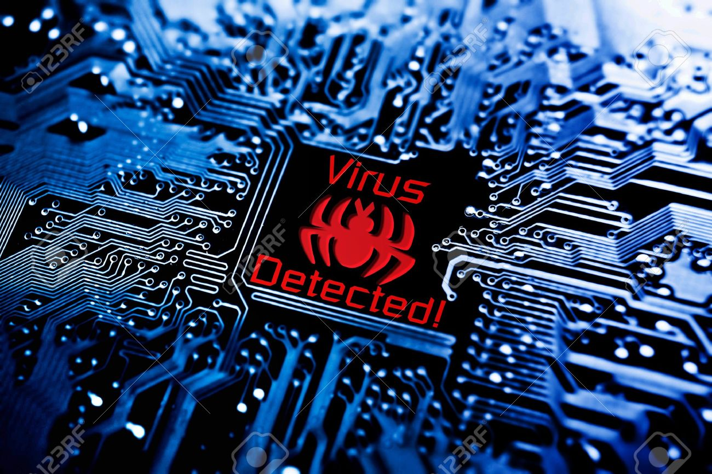

La informática, también llamada computación, es una ciencia que estudia métodos, técnicas, procesos, con el fin de almacenar, procesar y transmitir información y datos en formato digital. La informática, que se ha desarrollado rápidamente a partir de la segunda mitad del siglo XX con la aparición de tecnologías como el circuito integrado, el Internet y el teléfono móvil, es la rama de la tecnología que estudia el tratamiento automático de la información.
En 1957, Karl Steinbuch añadió la palabra alemana Informatik en la publicación de un documento denominado Informatik: Automatische Informationsverarbeitung (Informática: procesamiento automático de información). El soviético Alexander Ivanovich Mikhailov fue el primero en utilizar Informatik con el significado de «estudio, organización, y diseminación de la información científica», que sigue siendo su significado en dicha lengua. En inglés, la palabra informatics fue acuñada independiente y casi simultáneamente por Walter F. Bauer, en 1962, cuando Bauer cofundó la empresa denominada Informatics General, Inc.
Orígenes
Artículo principal: Anexo:Historia de la computación. La disciplina de la informática es anterior a la creación de las computadora. Ya en la Antigüedad se conocían métodos para realizar cálculos matemáticos, por ejemplo el algoritmo de Euclides. En el siglo XVII comenzaron a inventarse máquinas calculadoras. En el siglo XIX se desarrollaron las primeras máquinas programables, es decir que el usuario podría modificar la secuencia de acciones a realizar.
En los inicios del procesamiento automático de la información, con la informática sólo se facilitaban los trabajos repetitivos y monótonos del área administrativa. La automatización de esos procesos trajo como consecuencia directa una disminución de los costes y un incremento en la productividad. En la informática convergen los fundamentos de las ciencias de la computación, la programación, y también las metodologías para el desarrollo de software, la arquitectura de las computadoras, las redes de computadores, la inteligencia artificial y ciertas cuestiones relacionadas con la electrónica. Se puede entender por informática a la unión sinérgica de todo este conjunto de disciplinas. Esta disciplina se aplica a numerosas y variadas áreas del conocimiento o la actividad humana, como por ejemplo: gestión de negocios, almacenamiento y consulta de información, monitorización y control de procesos, industria, robótica, comunicaciones, control de transportes, investigación, desarrollo de juegos, diseño computarizado, aplicaciones / herramientas multimedia, medicina, biología, física, química, meteorología, ingeniería, arte, etc. Puede tanto facilitar la toma de decisiones a nivel gerencial (en una empresa) como permitir el control de procesos críticos. Actualmente, es difícil concebir un área que no use, de alguna forma, el apoyo de la informática. Ésta puede cubrir un enorme abanico de funciones, que van desde las más simples cuestiones domésticas hasta los cálculos científicos más complejos. Entre las funciones principales de la informática se cuentan las siguientes:
* Creación de nuevas especificaciones de trabajo
* Desarrollo e implementación de sistemas informáticos
* Sistematización de procesos
* Optimización de los métodos y sistemas informáticos existentes
* Facilitar la automatización de datos y formatos.
Sistemas de tratamiento de la información
Los sistemas computacionales, generalmente implementados como dispositivos electrónicos, permiten el procesamiento automático de la información. Conforme a ello, los sistemas informáticos deben realizar las siguientes tres tareas básicas:
Entrada: captación de la información.
Normalmente son datos y órdenes ingresados por los usuarios a través de cualquier dispositivo de entrada conectado a la computadora.
Proceso:tratamiento de la información.
Se realiza a través de programas y aplicaciones diseñadas por programadores que indican de forma secuencial cómo resolver un requerimiento.
Salida: transmisión de resultados.
A través de los dispositivos de salida los usuarios pueden visualizar los resultados que surgen del procesamiento de los datos.
Sistema operativo es un conjunto de programas que permite interactuar al usuario con la computadora.
Sistemas de mando y control, son sistemas basados en la mecánica y motricidad de dispositivos que permiten al usuario localizar, dentro de la logística, los elementos que se demandan.
Están basados en la electricidad, o sea, no en el control del flujo del electrón, sino en la continuidad o discontinuidad de una corriente eléctrica, si es alterna o continua o si es inducida, contra inducida, en fase o desfase (ver periférico de entrada).
Sistemas de archivo, son sistemas que permiten el almacenamiento a largo plazo de información que no se demandará por un largo periodo de tiempo. Estos sistemas usan los conceptos de biblioteca para localizar la información demandada.
Código ASCII
es un método para la correspondencia de cadenas de bits permitiendo de esta forma la comunicación entre dispositivos digitales así como su proceso y almacenamiento, en la actualidad todos los sistemas informáticos utilizan el código ASCII para representar textos, gráficos, audio e infinidad de información para el control y manipulación de dispositivos digitales.
En un editor de texto presionando las teclas ALT + el número del código ASCII, aparecerá el carácter correspondiente, solamente funciona en un teclado que tenga las teclas numéricas.
Los virus informáticos son programas que se introducen en una computadora, sin conocimiento del usuario, para ejecutar en él acciones no deseadas.
Estas acciones son:

* Unirse a un programa.
* Mostrar mensajes o imágenes, generalmente molestas.
* Ralentizar o bloquear la computadora.
* Destruir la información almacenada.
* Reducir el espacio en el disco.
* Robo de datos: contraseñas, usuarios, y otros tipos de datos personales.
Los tipos de virus informáticos que existen son:
Gusanos: recogiendo información, contraseñas, para enviarla a otro.
Bombas lógicas o de tiempo: que se activan cuando sucede algo especial, como puede ser una fecha.
Troyanos: hace que las computadoras vayan más lentas.
Virus falsos: información falsa.
Estos virus se pueden prevenir:
* Haciendo copias de seguridad.
* Copias de programas originales.
* Rechazo de copias de origen dudoso.
* Uso de contraseñas.
* Uso de antivirus.
Importancia
Importancia en el Ámbito Social
Las tecnologías de la información, actualmente son elementos fundamentales para la superación y desarrollo de un país.
Por eso, los países desarrollados basan su crecimiento en la aplicación y la programación estratégica de las herramientas computacionales y han definido políticas que los inducirán a su permanencia en el dinamismo mundial de los próximos años.
Ante el nuevo entorno económico mundial los países emergentes están obligados a preparar profesionales en áreas de la informática y las telecomunicaciones, capaces de enfrentar los retos que se tienen hoy en día.
Asimismo, la presencia de la computación en los sectores productivos es un factor determinante para su funcionamiento.
En tal sentido, las instituciones educativas deberán aportar a la sociedad recursos humanos que formen la estructura sólida en informática, acorde con los países del primer mundo, sobre la que crecerá la economía nacional.
Por otra parte, la Informática está tan popularizada que es muy difícil que una empresa adquiera una ventaja competitiva por tener computadoras más potentes o una red más extensa.
La ventaja competitiva se logra con un uso más eficiente de la tecnología y, por supuesto, optimizando la gestión del negocio y/o empresa.
Existe una seria preocupación en diferentes sectores de la sociedad sobre los problemas que las computadoras personales de acuerdo a su criterio están ocasionando en la sociedad.
Por mencionar algunos de ellos:
La posibilidad de crear desigualdades sociales, desempleo, orientación del empleo hacia áreas técnicas, el considerar a la máquina como el sustituto del cerebro humano, la deshumanización de los usuarios, la dependencia del ser humano respecto de una máquina o la limitación de la evolución normal del conocimiento cuando se utiliza en la educación.
Importancia en el Ámbito Cultural
Permite acercar a la red y al mundo una cultura de un sitio o época determinada. Permite conocer la historia de civilizaciones antiguas (mallas, egipcios, etc.) o simplemente conocer un destino o lugar al que deseamos ir o aprender. Desarrollo o mejoramiento de las facultades físicas o morales intelectuales o morales, mediante la educación.
Conjunto de ideas, habilidades y costumbres y que han ido adquiriendo un grupo humano y transmitiendo de generación en generación. Suma total de los rasgos del comportamiento y de las creencias características aprendidas de los miembros de una sociedad. A la informática se le considera importante porque están provocando cambios significativos en las formas de organización social, redefiniendo en gran medida las relaciones sociales en diferentes ámbitos.
Importancia en el Ámbito Económico y Laboral
Ámbito Económico:
Algunos de los ejemplos de la importancia de la informática en la economía son:
La información se considera como insumo de las organizaciones sociales, y el encargado de procesarla es el profesional de la informática.
Con base en la información económico-financiera pueden tomarse mejores decisiones
Un país necesita profesionistas en informática para generar, procesar y analizar información macroeconómica que permita definir la política económica a seguir.
Ámbito Laboral:
Permite gestiones y almacenamiento de datos esenciales para cualquier empresa y así ahorrar tiempo y dinero ya que al almacenar en memorias en vez de en papel se obtiene espacio y eficacia ya que apenas nos preocupamos de que este en perfecto estado la información puesto que los datos empresariales son sumamente cuidados por los gestores.
Importancia en el Ámbito Educativo y Personal.
Ámbito Educativo:
Su importancia deriva debido a su capacidad para almacenar gran cantidad de datos, los computadores pueden ser usados como instrumentos de estudios y consulta de cualquier materia a cualquier nivel: otorgando al estudiante especial atención individual.
La informática ofrece una gran cantidad de medios para lograr un aprendizaje eficaz como lo son el uso de gráficos, dibujos, caracteres de distintos formatos, color sonido.
Superando las limitaciones de la enseñanza clásica la informática permite un dialogo dinámico hombre-máquina para adecuar este proceso a las necesidades particulares de cada persona de acuerdo a su velocidad de aprendizaje.
Ámbito Personal:
Actualmente es el sistema de comunicación y de ocio más usado puesto que permite tanto reproducir videos, televisión, música etc. además permite conexión alrededor del mundo con internet. Es en el ámbito personal y estudiantil la herramienta más eficaz.
Importancia en el Ámbito de la Navegación, Aeronáutica y Ciencia
Ámbito de la Navegación
En el área marítima los computadores controlan la fijación de posiciones o situaciones geográficas mediante satélites. En los puertos, una gran parte de las operaciones de carga y descarga se realizan de acuerdo a un programa establecido por el computador.
Ámbito de la Aeronáutica:
El computador realiza funciones tales como: controlar el tráfico aéreo, presentar la posición y altura de los aviones a través de las pantallas de radar, simular operaciones de vuelos especiales.
Ámbito de la Ciencia:
El computador es de gran ayuda para analizar los datos, almacenar y recuperar información, simplificar expresiones, controlar experimentos, identificar moléculas, medir áreas de figuras específicas, llevar información estadística de procesos, etc.